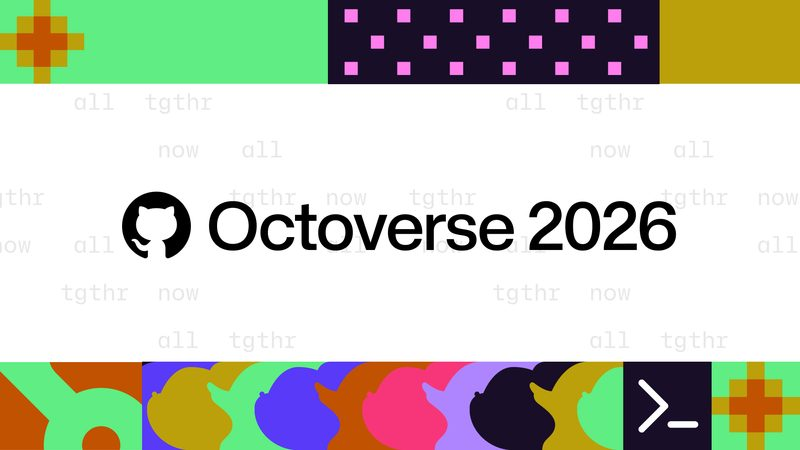
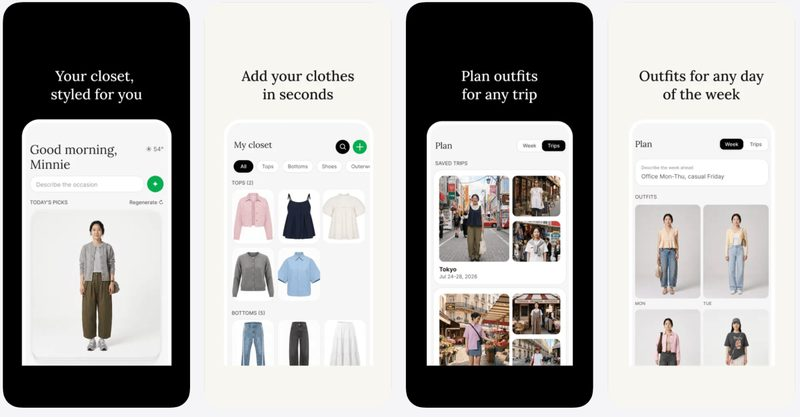
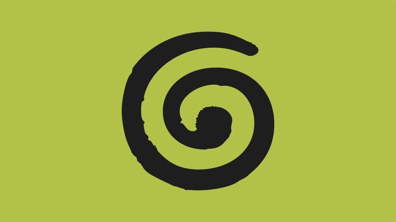

今日頭條
Google AI 搜尋廣告走向全球
PLUS：Amazon Alexa 新增上百項購物功能
Google 宣布把 AI 模式裡的廣告擴大到美國以外的市場；另外 Amazon 替 Alexa 加入上百項購物功能，GitHub 也公布超過四成程式碼修改由 AI 代理起頭。
Google 把 AI 搜尋廣告推向全球
Alphabet 10 月 28 日（美國時間）公布第三季財報，營收 1,276 億美元、年增 25%，但搜尋營收成長放緩到 12%，股價跌 8%。Google 在財報會議上宣布，「AI 模式」裡的廣告將首度擴大到美國以外的市場，美國也會推出多輪對話式廣告。
💡 跟你有什麼關係：以後用 Google 的 AI 模式或 AI 摘要查東西，答案裡可能會出現廣告商品；看推薦時要分清楚哪些是贊助內容。
⚠️ 報導沒有列出擴大到哪些國家，也沒提到台灣何時開始。
📰 原始來源：TechCrunch（2026-10-28） ↗圖：TechCrunch／Getty Images新上線#2Amazon Alexa 新增上百項購物功能：改訂閱、改送貨指示
Amazon 10 月 29 日宣布，在年底購物季前替 Alexa 加入超過 100 項購物相關功能：可以建立和編輯購物清單、調整定期訂購（例如把每月送一次改成每三個月）、修改送貨地址或放置位置，也能詢問 Prime、Audible 訂閱與付款問題。Amazon 表示今年以來使用代理功能的人數成長 8 倍，過去 12 個月有超過 4 億人用 Alexa 購物。
💡 跟你有什麼關係：語音助理開始能直接幫你改訂單和訂閱，省去自己點進 App 找設定；但也代表一句話就可能動到付款或送貨資料，要留意權限設定。
⚠️ 報導未說明開放哪些國家和語言，也沒提到台灣能不能用。
📰 原始來源：TechCrunch（2026-10-29） ↗
圖：GitHub數字#3GitHub：超過四成程式修改由 AI 代理起頭
GitHub 10 月 28 日公布年度 Octoverse 報告：到 9 月，超過 40% 的 pull request（程式修改申請）是由 AI 代理先寫初稿，3 月時只有 17%，光 9 月就有 1.1 億筆。同時推出 Copilot Fusion，自動替每個步驟挑選合適的 AI 模型。
💡 跟你有什麼關係：你每天用的 App 和網站，有越來越多程式碼是 AI 先寫、人再審；軟體更新可能更快，但也更依賴審查把關品質。
⚠️ 數字為 GitHub 自行統計，它表示偵測不到所有 AI 代理，實際比例可能更高。
📰 原始來源：GitHub 官方部落格（2026-10-28） ↗
圖：TechCrunch／Meta新上線#4Meta 悄悄推出 AI 穿搭 App「Style Sketch」
Meta 推出 Style Sketch，可從你在 Instagram 發過的照片或自己拍的衣服建立虛擬衣櫃，再由 AI 搭配穿搭，並套在依你身形、膚色生成的模特兒身上試穿；輸入旅行地點和天數，還能排出每天的穿搭。目前只在印尼、新加坡、泰國上架 iOS 和 Android。
💡 跟你有什麼關係：每天不知道穿什麼、出國打包衣服，都可能交給 AI；但要讓它讀你的照片和身形，隱私要先想清楚。
⚠️ Meta 尚未回應是否擴大到其他國家，台灣目前還不能用。
📰 原始來源：TechCrunch（2026-10-29） ↗
圖：TechCrunch／Granola工具#5會議筆記 App Granola 推出免費語音輸入
以 AI 會議筆記出名的 Granola 10 月 29 日推出語音輸入：在 Mac 上按 Fn 鍵說話，它會整理成通順的文字，貼到任何 App 裡，官方表示字數無上限、免費。iOS 和 Windows 版之後推出。
💡 跟你有什麼關係：回 email、寫訊息或對 AI 下指令時，用講的比打字快；這類工具越來越多，也開始提供免費版本。
⚠️ 目前只有 Mac；中文辨識效果報導未說明。
📰 原始來源：TechCrunch（2026-10-29） ↗圖：TechCrunch／Getty Images新上線#6Mistral 開放兆級參數模型 ML4，主打資安
法國 AI 公司 Mistral 10 月 29 日開放 Mistral Large 4（ML4）的權重，企業和政府可以下載、在自己的機房執行。Mistral 表示它的表現和中國開放模型 GLM-5.3 相當，但每項任務少用 47% 的 tokens，在 Hugging Face 和 API 都能取得。
💡 跟你有什麼關係：政府和公司可以不把資料送到美國 AI 公司，也能用到頂尖模型處理資安，對重視資料主權的機構是另一個選擇。
⚠️ 效能數字為 Mistral 自評；兆級參數模型需要大量 GPU，一般人電腦跑不動。
📰 原始來源：TechCrunch（2026-10-29） ↗圖：CNA／Reuters政策#7馬來西亞機場查獲約 1,200 萬美元 AI 晶片
馬來西亞海關 10 月 28 日表示，本月 15 日在吉隆坡國際機場自由貿易區查獲 30 台裝有先進 AI 晶片的伺服器，價值約 4,950 萬令吉（約 1,211 萬美元）。貨物謊報為電子零件，準備轉運到另一個亞洲國家。
💡 跟你有什麼關係：AI 晶片已經是各國管制的戰略物資，走私與查緝會影響晶片供應鏈，也和台灣半導體產業息息相關。
⚠️ 官方說這已是同一走私集團的第五起案件，總值超過 1 億令吉；最終目的地未公開。
📰 原始來源：CNA／Reuters（2026-10-28） ↗✅ 今天可以做：用 AI 搜尋比價或找推薦時，留意答案裡標示「贊助」的項目，重要的購買決定多看幾個來源再下手。
🗂️ 過去 14 天